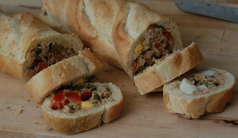

| Zutaten für 3 Stück: | |
| 2 Dosen | Thunfisch |
| 3 | kleine Baguette Flûtes |
| 2 El | Olivenöl |
| 2 El | Zitronensaft |
| 1 | Tomate |
| 1 | hart gekochtes Ei |
| einige | mixed Pickles |
| 1 Bund | Schnittlauch |
| Salz | |
| Pfeffer | |
| Paprika | |
Anschnitt von den Baguettes wegschneiden und die Brötchen aushöhlen.
Das weiche Brotinnere in kleine Stücke zerpflücken und in eine Schüssel geben. Mit Öl und Zitronensaft beträufeln und leicht vermischen.
Tomate entkernen und würfeln, Ei hacken, Mixed Pickles und Schnittlauch kleinschneiden. Thunfisch und die vorbereiteten Zutaten zum zerpflückten Brot geben, würzen und alles mit einer Gabel gut verarbeiten.
In die Baguette füllen, den Anschnitt wieder darauf setzen und in Folie verpacken.
Spunti Werbung im Brückenbauer.
Am 14.6.2009 zubereitet. Sandra hatte erst gar kein Interesse weil das Rezept mit Fischsandwich betitelt war. Als ich ihr aber eine Schnitte als Amuse-Bouche brachte einigten wir uns auf die 4 Sterne Wertung. Das Gericht ist blitzschnell zubereitet und schmeckt toll. RE
@LINKBACK_TAG@ @WAKELOCK@